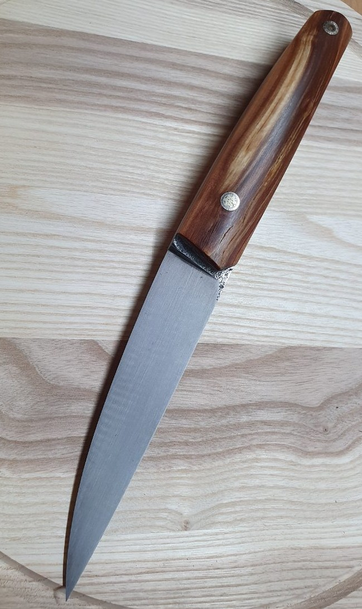
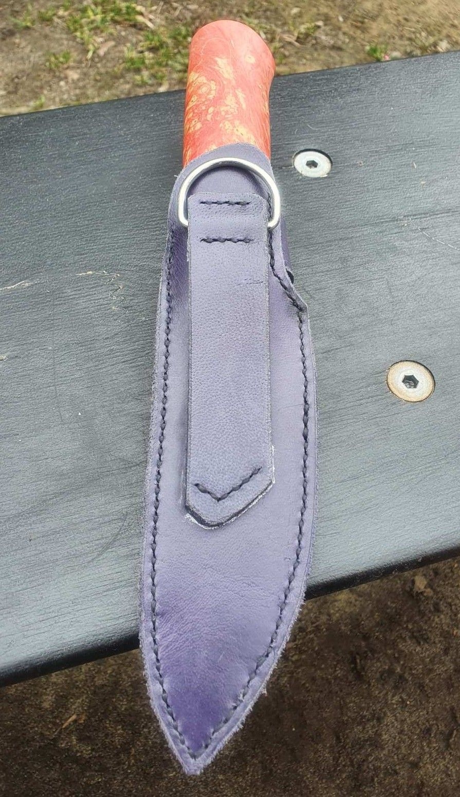
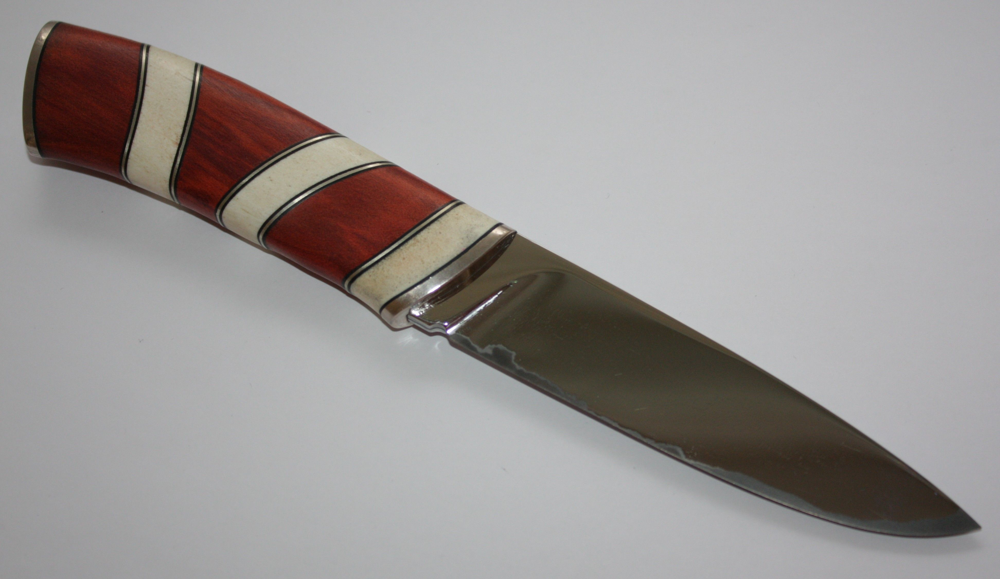
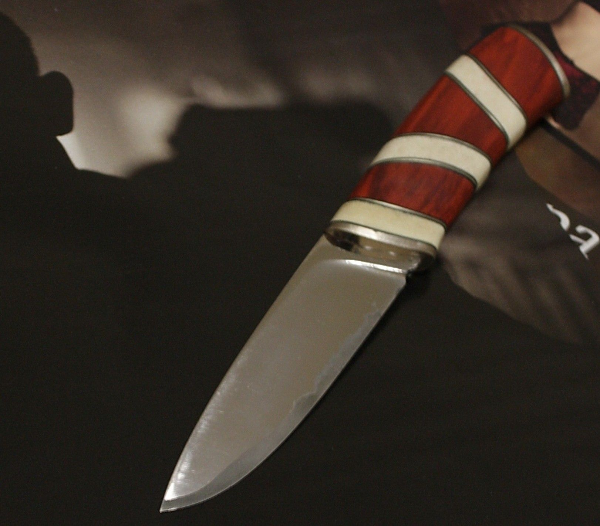
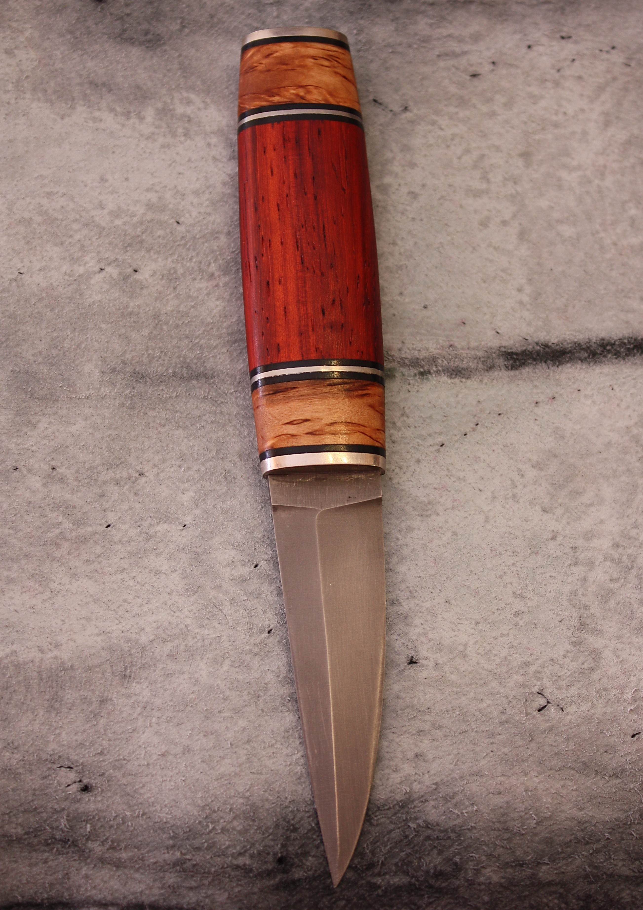

У цій галереї представлені ножі, які я виготовив власноруч та ще є в наявності. Замовлень не роблю.
Якщо вас зацікавив якийсь ніж — звертайтесь за контактами нижче. Також там можна переглянути інші мої роботи
Ніж «по мотивам Айкуті»: сталь ДІ37, морений дуб, нейзильбер YouTubeНіж «по мотивам Айкуті»: сталь ДІ37, морений дуб, нейзильбер YouTubeНіж «по мотивам Айкуті»: сталь ДІ37, морений дуб, нейзильбер YouTubeНіж «Малюк»: сталь 95х18, кап дубаНіж «Малюк»: сталь 95х18, кап дубаНіж «Малюк»: сталь 95х18, кап дубаНіж «Каповий»: сталь х12мф, кап клена з латунними радіусними вставкамиНіж «Класика»: сталь ДІ37, Морений дуб латунь на карельська береза YouTubeНіж «Класика»: сталь ДІ37, Морений дуб латунь на карельська береза YouTubeНіж «Класика»: сталь ДІ37, Морений дуб латунь на карельська береза YouTubeНіж «Колючка»: сталь ДІ90, Стаб сувель. Зножнами з шкіри «крейзіхорс»Ніж «Колючка»: сталь ДІ90, Стаб сувель. Зножнами з шкіри «крейзіхорс»

Ніж «Колючка»: сталь ДІ90, Стаб сувель. Зножнами з шкіри «крейзіхорс»Ніж «Фултанг»: сталь х12мф, на стяжках корбі.Ніж «Червоненький»: сталь ДИ37, Стабілізований кап.

Ніж «Червоненький»: сталь ДИ37, Стабілізований кап.Ніж «Смугастик»: сталь Ламінат р18 в обкладках 40х13, дерево редхарт та мельхіор

Ніж «Смугастик»: сталь Ламінат р18 в обкладках 40х13, дерево редхарт та мельхіор

Ніж «Смугастик»: сталь Ламінат р18 в обкладках 40х13, дерево редхарт та мельхіор

Ніж «Томмі XS»: сталь Х12мф , дерево бубинго карельська береза та мельхіорНіж «Томмі XS»: сталь Х12мф , дерево бубинго карельська береза та мельхіорНіж «-U8-»: сталь У8 , дерево бубинго карельська береза та мельхіор